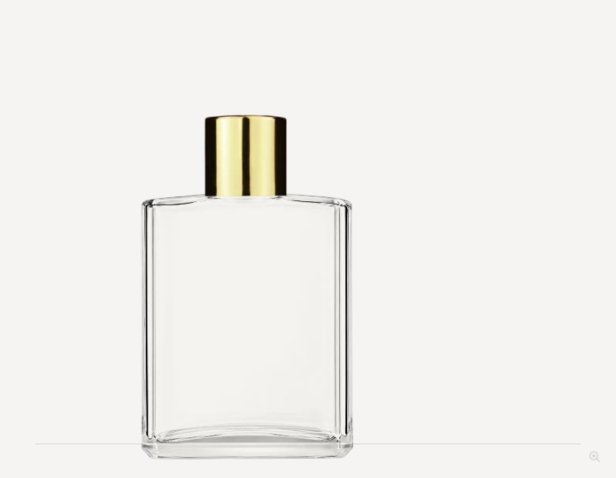
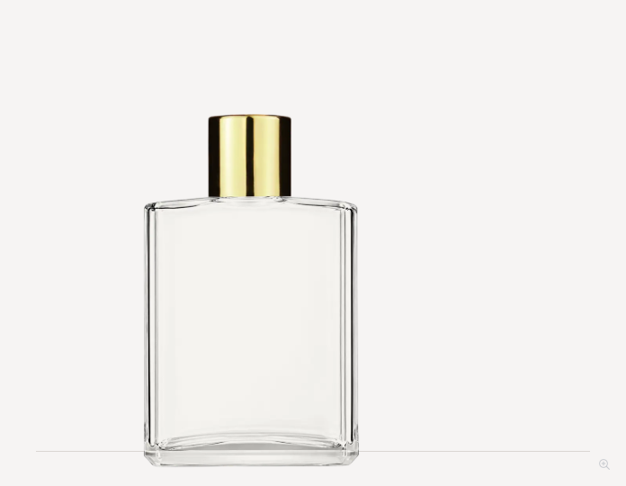
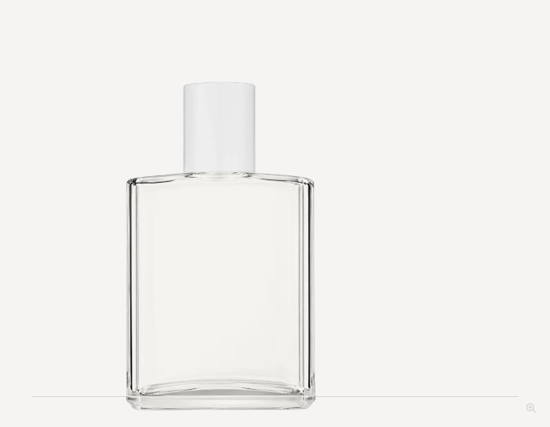
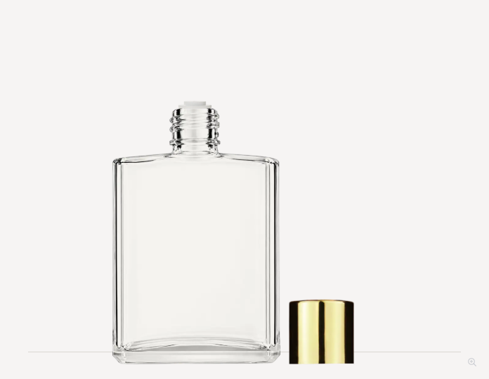
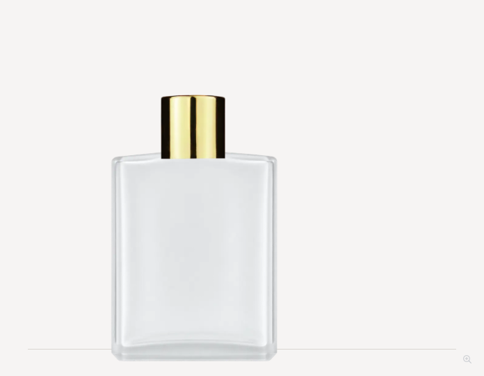
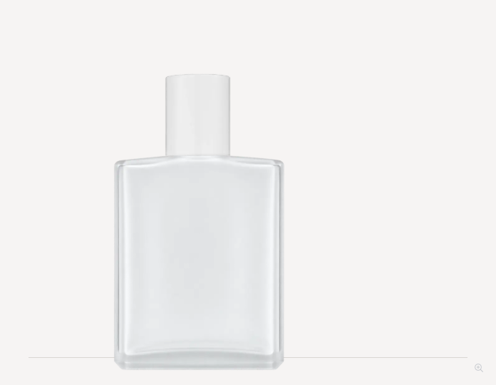
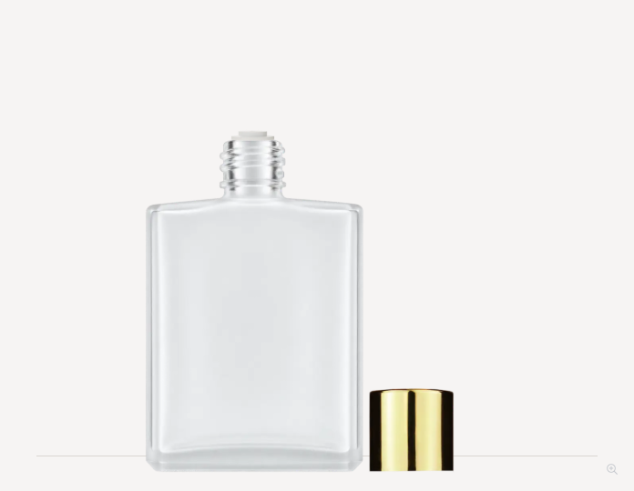

Elegant 60 ml: corrected cap seating
Caps sit flush at the shoulder, without an exposed neck gap or overlap into the glass. Glass artwork, bottle scale, base position and reducer insert are unchanged. Applied to 24 local reducer kits shared by the product page and builder.
Checked 60 product-page states across 20 visible finishes, all 24 builder kits and both product-to-builder handoffs. Local review only. Check report
Clear

Before: cap intersects shoulder
Corrected: cap meets shoulder
White cap
Cap offOpen clear bottle
Frosted

Before: cap intersects shoulderCorrected: cap meets shoulder
White cap
Cap offOpen frosted bottle
All visible cap finishes